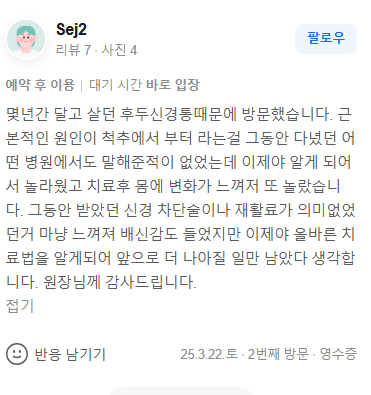

치료 증례 (Sej2 님 실제 네이버 영수증 리뷰 원문)
"몇년간 달고 살던 후두신경통때문에 방문했습니다. 근본적인 원인이 척추에서 부터 라는걸 그동안 다녔던 여러 병원에서도 말해준적이 없었는데 이제야 알게 되어서 놀라웠고 치료후 몸에 변화가 느껴져 또 놀랐습니다. 그동안 받았던 신경 차단술이나 재활료가 의미없었던거 마냥 느껴져 배신감도 들었지만 이제야 올바른 치료법을 알게되어 앞으로 더 나아질 일만 남았다 생각합니다. 원장님께 감사드립니다."

1. 만성 후두신경통은 후두신경이 지나는 상부 경추(목뼈 1, 2번)의 틀어짐이 주원인입니다.
2. 통증 부위에만 주사를 놓는 방식은 구조적 압박을 해소하지 못해 재발하기 쉽습니다.
3. 바디올은 SART 정밀 교정으로 신경 압박 경로를 확보하여 머리를 맑게 합니다.
후두신경통(Occipital Neuralgia)은 대후두신경이나 소후두신경이 머리 뒤쪽으로 올라가는 경로에서 압박받을 때 발생합니다. 이 신경들은 모두 상부 경추(C1, C2) 사이에서 뻗어 나오는데, 거북목이나 일자목 등으로 인해 목뼈 사이의 간격이 좁아지거나 정렬이 어긋나면 신경이 물리적으로 짓눌리게 됩니다. 환자들이 느끼는 '눈이 빠질 듯한 통증', '뒷머리가 찌릿한 증상'은 사실 뇌의 문제가 아니라 목에서 기인한 전기적 과부하 신호입니다.
많은 환자가 통증을 견디다 못해 주사(신경차단술)를 맞지만, 이는 신경의 전달 경로를 화학적으로 일시 마비시키는 것에 불과합니다. 생체역학적 관점에서 보면, 신경을 누르고 있는 상부 경추의 아탈구(Subluxation)를 바로잡지 않는 한 약 기운이 떨어지면 통증은 반드시 돌아옵니다.
바디올의 SART 척추정렬회복술은 단순히 근육을 마사지하는 수준을 넘어, 경추 1, 2번의 미세한 뒤틀림을 정밀 타격하여 신경이 지나가는 통로(Space)를 다시 넓혀줍니다. 이것이 바로 주사 치료에 반응하지 않던 만성 환자들이 단 몇 차례의 교정만으로도 머리가 맑아지는 변화를 느끼는 이유입니다.
• 경추 정밀 정골 요법: 턱관절과 목뼈 1, 2번의 축을 동시에 맞추어 후두신경의 물리적 압박을 즉각적으로 해소합니다.
• 공간 확보 Hammering: 굳어버린 심부 근막과 인대를 정밀하게 이완시켜 목뼈의 곡선(Lordosis)을 회복합니다.
• 고농도 약침 & 도침 요법: 신경 주위의 만성 유착과 염증을 박리하여 신경 신호의 흐름을 정상화합니다.
• 현대 물리치료: 긴장된 승모근과 후두하근을 안정시켜 재발을 방지합니다.